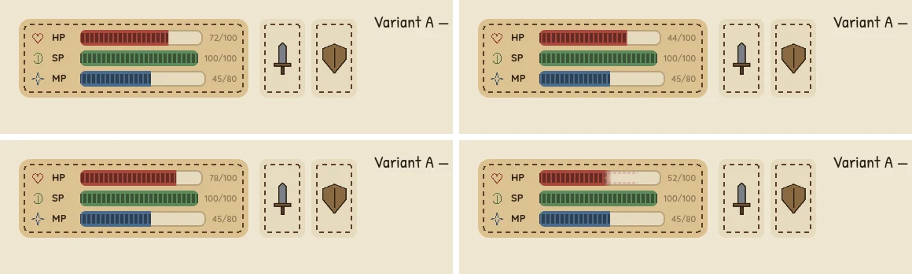

A lot of Fiber’s code is now written by AI agents, often while I’m doing something else. That only works because of a process that keeps the decisions with people and hands the agents work they can finish without asking. This week I wrote it all down in one place, so here’s the tour.
Ideas become maps
Everything starts as a loose idea: “projectiles should ricochet,” “the UI should look sewn,” “grass should move when you walk through it.” A wayfinder map, built on Matt Pocock’s wayfinder skill, turns that into a GitHub issue with a stated destination and a set of child tickets, each one a question that has to be answered before anyone builds anything:
- Grilling tickets interview me about a decision until it’s pinned down.
- Prototype tickets build two or three throwaway versions so I can pick by looking, not by imagining.
- Research tickets survey prior art, tools or engine limits.
- Task tickets cover the odd bit of setup.
Every map declares one destination type: code an agent can implement, code a person should implement, an architecture decision record, or a system spec. Tickets block each other with GitHub’s native dependency edges, so “what can be worked on next” is a query, not a judgment call. A daily wayfinding routine advances one open grilling, prototype or research ticket per run, and the answers collect in the map’s “Decisions so far” section.
The whole line
- ChartA session turns the idea into a map and child tickets with dependency edges.
- WayfindOne ticket per session or routine run, until every child ticket is closed.
- Hand offWrite the implementation plan, merge it to
main, then file one agent-ready issue per plan phase. - ImplementA scheduled agent picks the oldest unblocked issue, follows the plan task by task with tests, and opens a PR.
- Playtest and reviewScripted playtests capture the result, and I review the PR.
Hard gates, not good intentions
The handoff step has rules that stop it rather than letting it guess. A map can’t hand off until every child ticket is closed. If writing the plan turns up a question the map never answered, the handoff files a new ticket and stops. An agent-ready issue has to be finishable without a human, so a “decide before merging” section in one is a bug by definition.
Order matters too: the plan merges to main before any issue points at it. The implementing agent branches from main, so a plan sitting on an unmerged branch is invisible to it. And because Fiber is co-op first, any plan that touches gameplay must say how other players see each change. Multiplayer is never a later “networking pass”.
The implementing agent
A scheduled Claude Code routine runs in the cloud. Each run lists the agent-ready issues, walks them oldest first, and takes the first one with no open blockers and enough detail to act on. It claims the issue so another run won’t pick it up, reads the plan and the system docs, follows the plan task by task with GUT tests, and opens a pull request with the full metadata. With a backlog of 80-plus issues and the dependency edges doing the sorting, it has something useful to do on almost every run.
Seeing the result
Tests prove the code does what it says, not that it looks or feels right. So this month I added a playtest pipeline: scripted scenarios launch the real game, drive it with real input, capture screenshots on events like taking damage, and record metrics. Playtests assert nothing. They exist so that I, and the agents, can look at what actually happened. They run on demand in CI and post the captures back to the PR.

What I still do
I chart the maps, answer the grilling, pick between prototypes, and review what lands. The wayfinder, grilling and triage skills come from Matt Pocock’s collection at AI Hero, and the rest are our own. The agents do the typing. The design and how it feels to play stay with people, which is where I wanted to spend my time anyway.